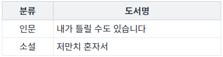
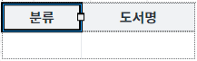
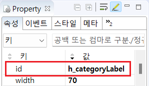

GridView의 헤더 값을 반환받는 함수 'getHeaderValue' 예시입니다. 함수 'getHeaderValue'는 헤더의 ID를 인자로 받아 Value를 반환합니다. 헤더의 Index로 헤더 값을 반환받고자 할 때는 함수 'getHeaderID'와 함께 사용하여 구현할 수 있습니다.
헤더의 ID로 헤더의 Value 반환받기
헤더의 Index로 헤더의 Value 반환받기
STEP 1. 초기 상태를 확인합니다.
GridView의 헤더 구성은 다음과 같습니다. 첫 번째 헤더 컬럼의 Value는 '분류', ID는 'h_categoryLabel'이고 Index는 0입니다. 두 번째 헤더 컬럼의 Value는 '도서명', ID는 'h_label'이고 Index는 1입니다.
그림 1.브라우저(Chrome) 실행 예시

STEP 2. 헤더의 ID가 'h_categoryLabel'인 헤더의 Value 반환받기
버튼 첫 번째 컬럼의 ID로 헤더 값 반환받기를 클릭합니다.STEP 3. 실행된 결과를 확인합니다.
'로그 확인'에 출력된 로그를 확인합니다.(브라우저의 개발자 도구 콘솔에도 로그가 출력되며, 객체 형식으로 확인할 수 있습니다.)
로그
[14:37:12] # 스크립트 실행
grd_exam1.getHeaderValue("h_categoryLabel");
반환 값)분류STEP 1. 초기 상태를 확인합니다.
GridView의 헤더 구성은 다음과 같습니다. 첫 번째 헤더 컬럼의 Value는 '분류', ID는 'h_categoryLabel'이고 Index는 0입니다. 두 번째 헤더 컬럼의 Value는 '도서명', ID는 'h_label'이고 Index는 1입니다.
그림 2.브라우저(Chrome) 실행 예시
STEP 2. 헤더의 Index가 1인 헤더의 Value 반환받기
버튼 두 번째 컬럼의 Index로 헤더 값 반환받기를 클릭합니다.STEP 3. 실행된 결과를 확인합니다.
'로그 확인'에 출력된 로그를 확인합니다.(브라우저의 개발자 도구 콘솔에도 로그가 출력되며, 객체 형식으로 확인할 수 있습니다.)
로그
[14:40:26] # 스크립트 실행 grd_exam1.getHeaderValue(grd_exam1.getHeaderID(1)); 반환 값)도서명
STEP 1. GridView의 헤더 컬럼의 속성을 지정합니다.
GridView의 헤더 ID를 변경합니다. 헤더 ID의 초기 값은 스튜디오에서 자동으로 부여됩니다.
[필수] id="문자열"
예시) id="h_categoryLabel"
그림 3.웹스퀘어5 SP5 스튜디오의 Design 탭 예시 - 헤더 컬럼 선택

그림 4.웹스퀘어5 SP5 스튜디오의 Property View(속성창) 예시

소스 본문
<!-- GridView 본문 예시 --> <w2:gridView id="grd_exam1"> <!-- 중략 --> <w2:header id="header1"> <w2:row id="row1"> <w2:column id="h_categoryLabel" inputType="text" value="분류" width="70"></w2:column> <w2:column id="h_label" inputType="text" value="도서명" width="100"></w2:column> </w2:row> </w2:header> <!-- 중략 --> </w2:gridView>
STEP 2. 스크립트를 작성합니다.
GridView의 함수 'getHeaderValue'를 이용하여 스크립트를 작성합니다. 첫 번째 인자에는 헤더 컬럼의 ID를 할당해야 합니다. 세부 지정은 아래의 스크립트 예시에 작성되어 있습니다.
스크립트
//예제 파일에서는 스크립트 'scwin.btn_exam1_1_onclick'에 작성되어 있습니다. // GridView 'grd_exam1'의 헤더 ID가 'h_categoryLabel'인 헤더 컬럼의 Value를 반환받습니다. let result = grd_exam1.getHeaderValue("h_categoryLabel"); // 반환 값 예시) '분류'
GridView의 함수 'getHeaderValue'와 함수 'getHeaderID'를 이용하여 스크립트를 작성합니다. 세부 지정은 아래의 스크립트 예시에 작성되어 있습니다.
스크립트
// GridView 'grd_exam1'의 헤더 Index가 1인 헤더 컬럼의 ID를 반환받습니다. let strHeaderID = grd_exam1.getHeaderID(1); // GridView 'grd_exam1'의 헤더 Index가 1인 헤더 컬럼의 Value를 반환받습니다. let result = grd_exam1.getHeaderValue(strHeaderID); // 반환 값 예시) '도서명'
getHeaderValue( headerId )
getHeaderID( headerIndex )
[웹스퀘어5 SP5 개발 가이드] GridView
링크 : https://docs1.inswave.com/sp5_user_guide/86bdcf48029b958b